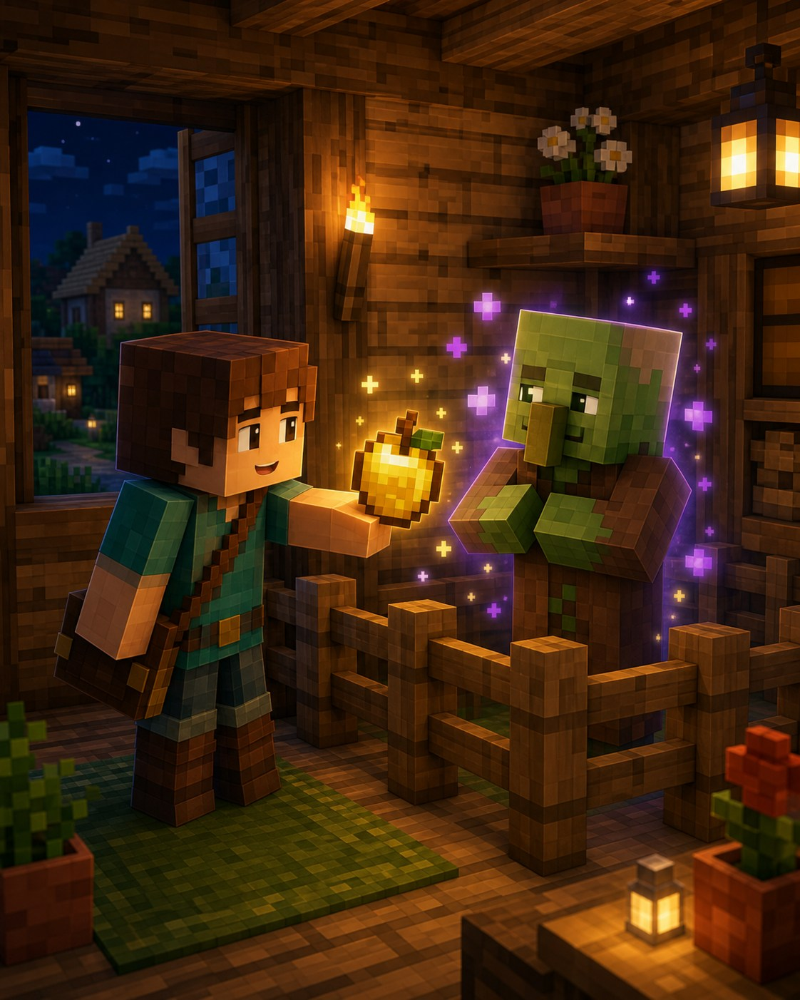
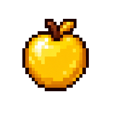

Особливе відкриття
Жителі знають секрети
Зомбі-жителя
можна
врятувати.
Слабкість і звичайне золоте яблуко повертають жителя. Це складніше, але дуже корисне вміння.

Навіщо це потрібно?
Врятований житель знову може мати професію та торгувати. Це шанс поповнити село й отримати добрі знижки в цього жителя.
Три прості дії
Як урятувати зомбі-жителя
1Зачини його в безпечному місціСонце й монстри не повинні завадити+
Зроби маленьку закриту кімнату або використай човен. Не бий зомбі-жителя під час лікування.
2Дай ефект слабкостіНайзручніше — вибухове зілля слабкості+
Кинь вибухове зілля слабкості так, щоб воно влучило. Навколо зомбі-жителя з’являться сірі завитки.
3Використай золоте яблукоЗвичайне, не зачароване+
Використай яблуко на зомбі-жителі та зачекай. Він почне тремтіти, а через кілька хвилин стане звичайним жителем.
Лікування: як це виглядає
житель

Слабкість ізолоте яблуко
житель
● Лікування триває приблизно 3–5 хвилин.
Підказка мандрівникові
Важливо знати
Не дай йому згоріти
Зачинений дах захистить від ранкового сонця.
Не плутай яблука
Потрібне звичайне золоте яблуко.
Зачекай до кінця
Під час лікування він усе ще небезпечний.
Маленьке завдання
Спробуй за 5 хвилин
- Побудуй маленьку закриту кімнату поруч із селом.
- Поклади туди золоте яблуко й зілля слабкості.
- Коли знайдеш зомбі-жителя, ти вже будеш готовий.
★ Бонус: після лікування дай жителю професію з першої картки.